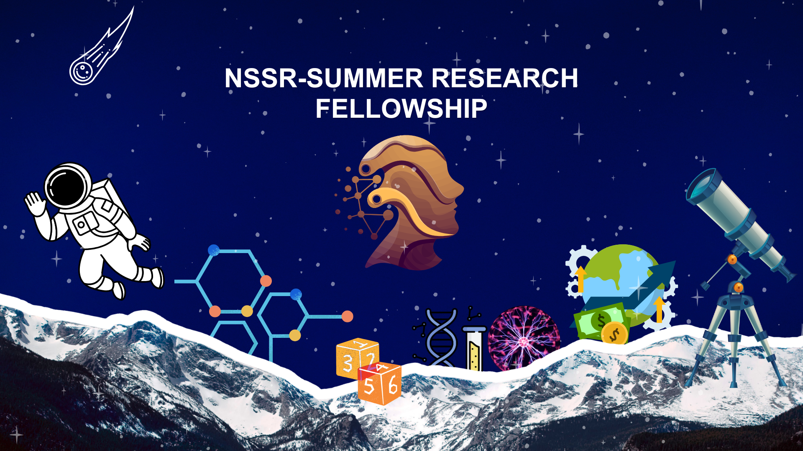

Discover · Connect · Research
Research Pathways
A monthly, multidisciplinary initiative where students explore one research field, meet researchers online and in person, share ideas, receive feedback, and find potential collaborators.
No image is needed here. The pathway is built around conversation, ideas, and participation.
Explore Pathways
12 Weeks · Training · Research · Publication
NSSR Summer Research Fellowship
A structured three-month fellowship guiding students through research foundations, collaborative implementation, scientific writing, and a final symposium.
View Fellowship